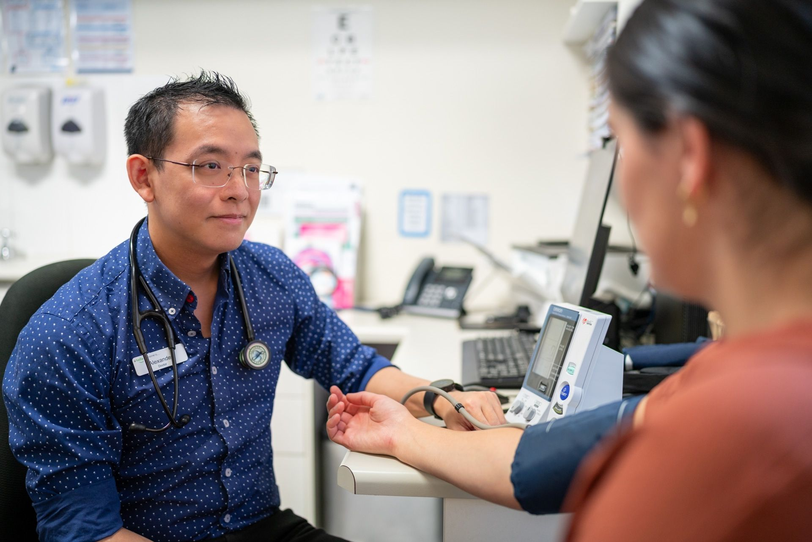

Busby Medical Practice · Bathurst, NSW
Dr Alexander Ho
General Practitioner
Holistic, patient-centred care for the Bathurst community.
Book an appointmentAbout me
Get to know Dr Ho
I was born and raised in Sydney. I completed a Bachelor of Laws and a Bachelor of Applied Finance and worked in those fields before studying medicine.
I undertook my medical training with Western Sydney University, and spent a year in Bathurst as part of the program's Rural Stream. I completed my residency across Westmead, Coffs Harbour, Auburn, and Westmead Children's Hospitals, with terms in emergency medicine, geriatrics, infectious diseases, general surgery, and paediatric general surgery.
I have now returned to Bathurst, continuing my training in General Practice. I enjoy the wide range of presentations seen in general practice and aim to provide holistic, patient-centred care.
Outside of medicine, I enjoy cooking, baking and rock climbing.
-
Cardiovascular health
-
Chronic disease management
-
Diabetes care
-
Asthma care
-
Men's health
-
Travel medicine
-
Workcover
-
Implanon insertion & removal
- Phone
- 02 6332 4266
- busby@bathurstgp.com.au
- Website
- bathurstgp.com.au
- Consulting hours
- Tuesday – Friday
8:00 am – 5:00 pm